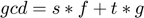

Contents
Algoritmo de Euclides
Algoritmo de Euclides Extendido:  Identidad de Bezout
path(path, 'Algorithms'); path(path, 'Classes');
a = -27 b = 24 Z = Integers; gcd = euclid(a,b,Z); % -3 fprintf("gcd(%i,%i) = %i\n",a,b,gcd); [gcd,s,t] = euclid_extended(a,b,Z); fprintf("%i = %i*%i + %i*%i\n",gcd,s,a,t,b); gcd = euclid_u(a,b,Z); % 3 fprintf("gcdu(%i,%i) = %i\n",a,b,gcd);
a =
-27
b =
24
gcd(-27,24) = -3
-3 = 1*-27 + 1*24
gcdu(-27,24) = 3
z = 18-i w = 11+7i Zi = GaussIntegers; gcd = euclid(z,w,Zi); % -i fprintf("gcd(%i%+ii,%i%+ii) = %i%+ii\n",real(z),imag(z), real(w), ... imag(w),real(gcd),imag(gcd)); [gcd,s,t] = euclid_extended(z,w, Zi); fprintf("%i%+ii = (%i%+ii)*(%i%+ii) + (%i%+ii)*(%i%+ii)\n",real(gcd), ... imag(gcd), real(s),imag(s),real(z),imag(z),real(t),imag(t),real(w),imag(w)); gcd = euclid_u(z,w,Zi); % 1 fprintf("gcdu(%i%+ii,%i%+ii) = %i%+ii\n",real(z),imag(z), real(w), ... imag(w),real(gcd),imag(gcd));
z =
15
w =
11.0000 + 7.0000i
gcd(15+0i,11+7i) = -1-2i
-1-2i = (0+3i)*(15+0i) + (-2-3i)*(11+7i)
gcdu(15+0i,11+7i) = 1+2i
p = 3; n = 1; fqx = FiniteFieldPoly(p,n); f = [-Inf 1 1]; fprintf("f(x) = %s\n", fqx.gfshow(fqx,f)); g = [1 1]; fprintf("g(x) = %s\n", fqx.gfshow(fqx,g)); h = euclid(f,g,fqx); fprintf("gcd(f(x),g(x)) = %s\n", fqx.gfshow(fqx,h)); [gcd,s,t] = euclid_extended(f,g,fqx); fprintf("%s = (%s)*(%s) + (%s)*(%s)\n ", fqx.gfshow(fqx,gcd), ... fqx.gfshow(fqx,s), fqx.gfshow(fqx,f), ... fqx.gfshow(fqx,t), fqx.gfshow(fqx,g)); gcd = euclid_u(f,g,fqx); fprintf("gcdu(f(x),g(x)) = %s\n", fqx.gfshow(fqx,gcd));
f(x) = 0 + 2x + 2x^2 g(x) = 2 + 2x gcd(f(x),g(x)) = 2 + 2x 2 + 2x = (0)*(0 + 2x + 2x^2) + (1)*(2 + 2x) gcdu(f(x),g(x)) = 1 + 1x
p = 3; n = 2; fqx = FiniteFieldPoly(p,n); f = [6 7 1]; fprintf("f(x) = %s\n", fqx.gfshow(fqx,f)); g = [1 2 4]; fprintf("g(x) = %s\n", fqx.gfshow(fqx,g)); h = euclid(f,g,fqx); fprintf("gcd(f(x),g(x)) = %s\n", fqx.gfshow(fqx,h)); [gcd,s,t] = euclid_extended(f,g,fqx); fprintf("%s = [%s]*[%s] + [%s]*[%s]\n ", fqx.gfshow(fqx,gcd), ... fqx.gfshow(fqx,s), fqx.gfshow(fqx,f), ... fqx.gfshow(fqx,t), fqx.gfshow(fqx,g)); gcd = euclid_u(f,g,fqx); fprintf("gcdu(f(x),g(x)) = %s\n", fqx.gfshow(fqx,gcd));
f(x) = (2 + 1a) + (1 + 1a)x + (0 + 1a)x^2 g(x) = (0 + 1a) + (1 + 2a)x + (2 + 0a)x^2 gcd(f(x),g(x)) = (0 + 1a) + (1 + 2a)x + (2 + 0a)x^2 (0 + 1a) + (1 + 2a)x + (2 + 0a)x^2 = [(0 + 0a)]*[(2 + 1a) + (1 + 1a)x + (0 + 1a)x^2] + [(1 + 0a)]*[(0 + 1a) + (1 + 2a)x + (2 + 0a)x^2] gcdu(f(x),g(x)) = (0 + 2a) + (2 + 1a)x + (1 + 0a)x^2